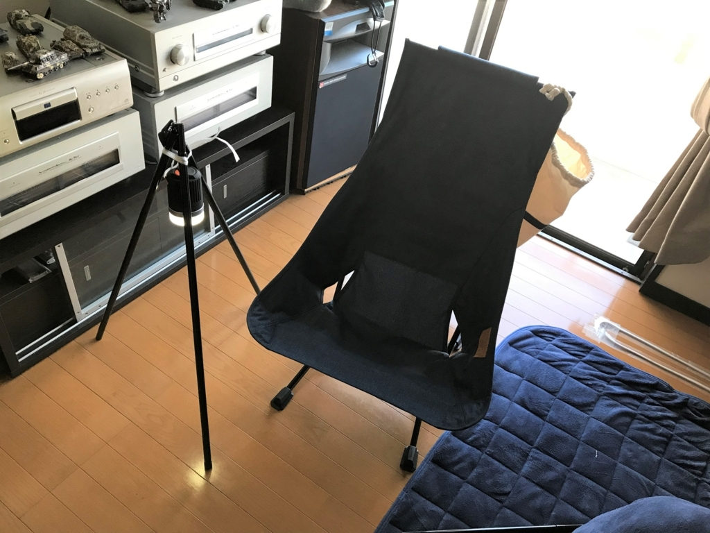
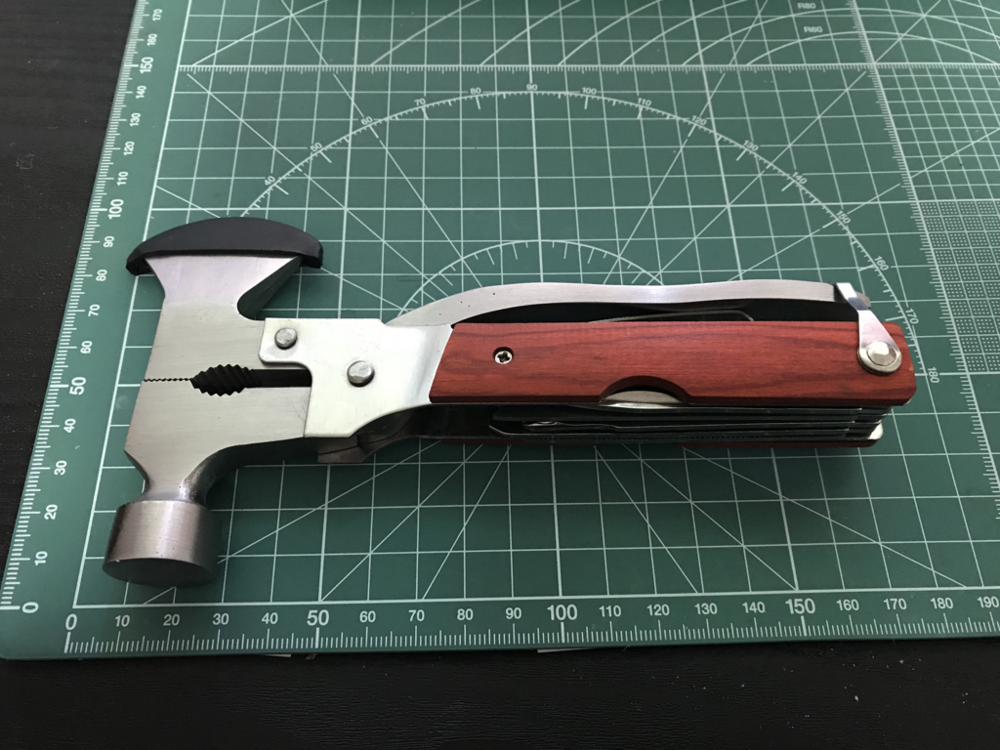

日記：キャンプ道具がブリブリ増えている
公開日：
けっして「ゆるキャン」なんかに感化されたわけではないのだけど、最近キャンプ道具を Amazon で買いあさってる。今日はその第3便ぐらいがまとめてドバっと送られてきた。まだ紹介してないのも含めて、ここに紹介しておく。
ビーチチェア
 ビーチチェア ネイビー 【日本正規代理店品】 19750009022001")
Helinox(ヘリノックス) ビーチチェア ネイビー 【日本正規代理店品】 19750009022001
- 出版社/メーカー: Helinox(ヘリノックス)
- メディア: スポーツ用品
- この商品を含むブログを見る
ちょっと奮発して 1.5 万円ぐらいのを買ってみたんだけど……めっちゃいい。リビングに設置して、仕事の合間、休憩がてら座りに行ってる。

やっぱり背もたれが頭まであるのがいいな。たためばすごくコンパクトで、バイクに積んでも問題ない。まぁ、40cm は超えちゃうので、サイドバッグに入れるのは無理だったけど……。
ついでにタープ用のポールも買って、簡易三脚をつくり、ランタンをつるしてみた。これで夜も本が読めそうだ。できたら専用の、設営が簡単で、コンパクトに収まるスタンドがほしいのだけど、それはおいおい考えることにする。
")
Sutekus テント タープ ウイング 用 アジャスタブル ポール 2本セット (ブラック)
- 出版社/メーカー: Sutekus
- メディア: その他
- この商品を含むブログを見る
調味料入れ

Naturehikeアウトドアクッキングギアオイルビネガーディスペンサーボトルセットバーベキュー設備ソースクレットセット6キャリングバーベキューのためのポータブルオイルボトルジャーのディスペンス
- 出版社/メーカー: Naturehike
- メディア: その他
- この商品を含むブログを見る
コーヒー、砂糖、塩コショウ、サラダ油ぐらいはもっていきたいので、それが入りそうな入れ物とケースのセットを買った。容器はちゃちいけど、洩れたりはしなさそう？ サラダ油入れなどはもう少しちゃんとしたのがほしいけど、これもおいおい買い足すことにする。
ペグハンマー（厨二バージョン）とまともなナイフ

ペグハンマーがほしいなーと思って Amazon を徘徊していたら、いつの間にか斧（笑）を買っていた。

最初は万能スコップにしようかと思ったんだけど、さすがに冒険し過ぎかと思い、こっちにした。斧としては……まぁ、せいぜい小枝を落とすぐらいにしか使えないと思うけど、ハンマーはそれなりに使えそう。そのほかにも
- プライヤー
- 糸切はさみ（？ 針金をカットできそうなのはある）
- ハンマー
- ナイフ
- プラスドライバー（ちょっと曲がってた……）
- ノコギリ
- ノコギリナイフ（ノコギリとの違いはいまいちわからない）
- マイナスドライバ
- 鈍いナイフ（鈍いと自己申告しているところは好印象）
- びん蓋開け（栓抜きのことと思われる）
- 六角レンチ（使いにくそうだけど、あればうれしい）
- やすり（爪とぎ？）
といった機能があるみたい。厨二心揺さぶるぜ……。
こういう万能系ツールは十徳ナイフみたいなのが定番だろうけど、ナイフは使用頻度が高そうだから、専門のものを買った。しょっちゅう使うのに、使わない機能いっぱいぶら下げんのはちょっとアホらしい。
 ステンレススチール #7皮紐付 Sky Blue(スカイブルー) 41405 【国内正規商品】")
OPINEL(オピネル) ステンレススチール #7皮紐付 Sky Blue(スカイブルー) 41405 【国内正規商品】
- 出版社/メーカー: OPINEL(オピネル)
- メディア: スポーツ用品
- この商品を含むブログを見る
買ったのは、オピネルの7番。よく知らんけど、このサイズが標準的だと聞いたのと、色がかわいかったのと、ひも付きがおすすめとのことだったので、これをチョイスした。晩御飯作るときにちょっと使ってみたけど、なかなかいい。まな板もほしくなるけど、それはおいおい考える。
たまごホルダー
 トレックエッグホルダー 生卵・ゆで卵 携帯 キャリーホルダー")
ロゴス(LOGOS) トレックエッグホルダー 生卵・ゆで卵 携帯 キャリーホルダー
- 出版社/メーカー: ロゴス(LOGOS)
- 発売日: 2012/03/23
- メディア: スポーツ用品
- この商品を含むブログを見る
卵が好きだから、たまごホルダーも買った。過信は禁物だけど、たまごを直接カバンに入れるよりかはマシだと思う。
さて、道具ばっかり買ってても仕方がないので、週末はちょっと実地訓練をする予定。幸い連休らしいから、風邪ひいて死んでも、週明けまでは引きずらないだろう……と思いたい。